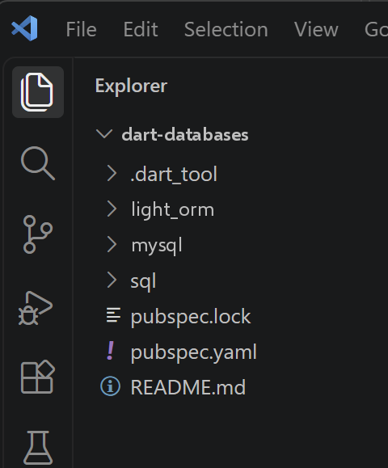
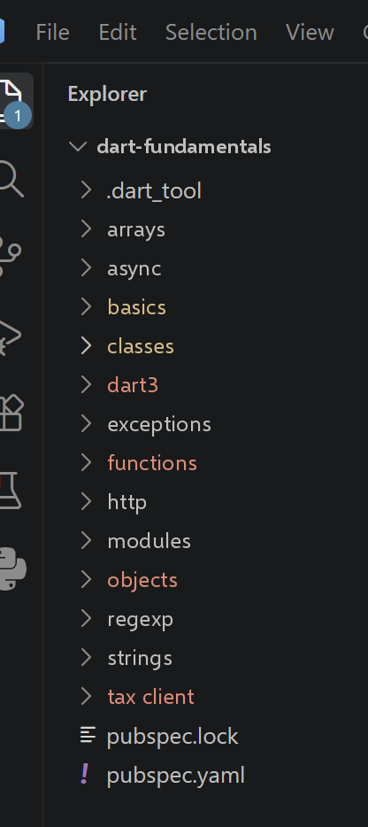

1. Introducción
El PDF del documento está |AQUÍ|.
Los códigos del documento están |AQUÍ|.
Este documento es producto de Claude, la IA de Anthropic. Su finalidad es transponer el documento [Introduction to the TypeScript Language and the NestJS Web Framework] sustituyendo el lenguaje TypeScript por el lenguaje Dart.
El modelo de IA Claude de Anthropic hizo la mayor parte del trabajo (90%):
- Generación del código: Claude generó todo el código. Yo me limité a probarlo siguiendo el curso generado. En el entorno donde trabajó Claude no había Dart disponible (a diferencia del curso de TypeScript, donde Claude podía ejecutar y verificar cada script): los scripts de este curso se escribieron y revisaron con el mismo cuidado y se comprobó su sintaxis (llaves y paréntesis balanceados, presencia de un punto de entrada [main] en cada script ejecutable), pero no pudieron compilarse ni ejecutarse antes de la entrega. Nota: todo el código entregado fue probado por el revisor del curso. Los errores se informaron a Claude, quien los corrigió de inmediato.
- Generación del curso en formato ODT: Claude generó varias versiones a pedido mío. Aquí fue donde intervine principalmente.
Serge Tahé, septiembre de 2026
==
Este documento es un curso introductorio al lenguaje [Dart], concebido con el mismo principio que el curso [Introducción al lenguaje TypeScript y al framework web NestJS mediante ejemplos (2026)]: aprender un lenguaje mediante una serie de scripts pequeños e independientes, comentados línea por línea, en lugar de una exposición teórica de su gramática.
La progresión sigue exactamente la del curso de TypeScript: los mismos conceptos, en el mismo orden, con un script Dart junto a cada script TypeScript. Esta simetría es intencional: permite comparar directamente, en todo momento, cómo abordan Dart y TypeScript una misma necesidad, e identificar, en cada diferencia, qué se debe a una simple elección de sintaxis y qué a una diferencia fundamental entre los dos lenguajes (tipado estructural frente a tipado nominal, compilación frente a transpilación, presencia o ausencia de coerción implícita, etc.).
Aquí se omitieron intencionalmente dos capítulos del curso de TypeScript: [Introduction to the NestJS Web Framework] y [Case Study: The Tax Calculation Server in NestJS]. Estos dos capítulos tratan de un framework web del lado del servidor escrito en TypeScript, un tema que no se relaciona directamente con el aprendizaje del lenguaje Dart. En cambio, se conserva el servidor NestJS de cálculo de impuestos: una vez instalado (véase el capítulo “Instalación de un servidor NestJS”), sirve como destino real para probar las funciones HTTP de Dart, exactamente como sirve de destino para los clientes HTTP y TypeScript del curso original.
Sin embargo, una diferencia de alcance distingue este curso del de TypeScript: la sección [The Fundamentals] del curso de TypeScript dedica tres secciones completas a las actualizaciones recientes de ECMAScript (2020–2024, 2026) y a la API [Temporal]. Estas novedades son propias de JavaScript/TypeScript y no tienen un equivalente directo en Dart; aquí se reemplazan por una sección sobre las [Dart 3.x New Features], dedicada a las funciones recientes propias de Dart: [records], [pattern matching], clases [sealed] y modificadores de clase.
1.1. Público objetivo y requisitos previos
Este curso está destinado a lectores que ya están familiarizados con la programación, idealmente quienes ya hayan seguido el curso de TypeScript, puesto que la comparación constante entre los dos lenguajes es central en el enfoque pedagógico adoptado aquí. No se requieren conocimientos previos de Dart: cada concepto nuevo se introduce mediante un script mínimo, comentado en detalle.
Contrariamente a la idea errónea muy extendida que reduce Dart a “el lenguaje de Flutter”, este curso no aborda Flutter ni las interfaces móviles en ningún momento: Dart se usa aquí como lenguaje de programación de propósito general, ejecutado desde la línea de comandos ([dart run]), exactamente como se usó TypeScript con [tsx] en el curso original.
1.2. Organización del proyecto de ejemplo


Los scripts de este curso se proporcionan en una estructura de directorios independiente, [dart-fundamentals/], que reproduce la estructura de carpetas del curso de TypeScript ([basics/], [arrays/], [objects/], [strings/], [regexp/], [functions/], [exceptions/], [modules/], [async/], [classes/], [http/]...), más una carpeta nueva, [dart3/], para la sección [Dart 3.x New Features]. Un segundo árbol de directorios, [dart-databases/], contiene el capítulo “Acceso a bases de datos”. Cada carpeta contiene su propio [README.md] y, cuando es necesario, su propio [pubspec.yaml] (el equivalente en Dart de [package.json] de Node.js; véase el capítulo siguiente).
Cada script se ejecuta individualmente con el comando [dart run], seguido de la ruta del script; por ejemplo, [dart run dart-fundamentals/basics/basics_01.dart]. No se necesita una instalación completa del proyecto para ejecutar un solo script: basta con [dart pub get] (equivalente a [npm install]), ejecutado una vez en la raíz de una carpeta que contenga un [pubspec.yaml], para instalar las dependencias de todos los scripts que contiene.